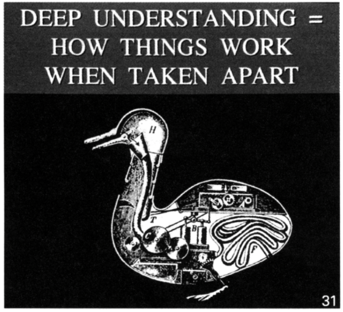

library(tidyverse)
library(patchwork)
theme_set(theme_minimal())11 Explanatory Model Building

What does it mean for this to cause that? This question has flummoxed the discipline of statistics for a very long time; but, more than statistics, it has also flummoxed philosophers for even longer!
Why is something that seems so natural to us in our limited, daily lives, so difficult to formalize? If it is difficult for us to formalize in conversation, how can we hope to formalize this so that a model can discover and evluate causal effects from data?
Of all the weeks in this class, this is perhaps the most conceptually challening.
11.1 Learning Objectives
At the end of this week’s learning, students will be able to
- Remember that most interesting questions in their data analysis are actually causal questions.
- Articulate a particular causal model that describes the world, and evaluate whether a research design and a statistical analysis does an adequate job answering a question about a causal model.
- Appreciate the deep difficulty of causal questions, and how research design guides data collection.
11.2 Class Announcements
Lab 2-Regression
Overview
- Setting: You are data scientists for a maker of products.
- Task: You select your own research question
- Your X should be an aspect of product design
- Your Y should be a metric of product success
- Deliverable: A statistical analysis that includes
- An introduction that motivates your research question
- A description of your model-building process
- A discussion of statistical assumptions that may be problematic
- A well-formatted regression table with a minimum of 3 specifications
- A conclusion that extracts key lessons from your statistical results
The Report
- Writing for a collaborating data scientist, what research question have you asked, what answers have you found, and how did you find them?
| Deliverable Name | Week Due | Grade Weight |
|---|---|---|
| Research Proposal | Week 12 | 10% |
| Within-Team Review | Week 14 | 5% |
| Final Presentation | Week 14 | 10% |
| Final Report | Week 14 | 75% |
Team Work Evaluation
- Most data science work happens on teams.
- Our educational goals include helping you improve in your role as a teammate.
- We’ll ask you to fill out a confidential evaluation regarding your team dynamics.
Final Presentation
- Team will present their work in live session 14.
- Teams have between 10-15 min dedicated to discussing their work (depending on section size)
- Two-thirds of the time can be the team presenting
- BUT at least one-third should be asking and answering questions with your peers
- For example, if teams have 15 minutes total, then plan to present for no more than 10 minutes and structure 5 minutes of questions.
11.3 Roadmap
Rearview Mirror
- Statisticians create a population model to represent the world.
- The BLP is a useful way to summarize relationships in a model, and OLS regression is a way to estimate the BLP.
- OLS regression is a foundational tool that can be applied to questions of description
Today
- Questions of explanation require a substantially different modeling process.
- To answer causal questions, we must work within a causal theory
- OLS regression is sometimes appropriate for measuring a causal effect,
- But, only when the model estimated matches the causal theory.
- So, we must watch out for omitted variable bias, reverse causality, and outcome variables on the right hand side.
Looking Ahead
- The famous Classical Linear Model (CLM) allows us to apply regression to smaller samples.
- We will address the pervasive issue of false discovery, and ways to be a responsible member of the scientific community.
11.4 Discussion
11.4.1 Path Diagrams
\[ \begin{matrix} \\ \text{Sleep} \rightarrow \text{Feelings of Stress} \\ \\ \end{matrix} \]
- How would the following fit into this causal path diagram?
- All the other factors in the world that also cause stress but don’t have a causal relationship with sleep.
- A factor: Coffee Intake
- What happens if you omit it in your regression?
- Reverse causality
- An outcome variable on the RHS: Job Performance
- What happens if you include it in your regression?
11.5 An Interlude

11.5.1 Omitted Variable Bias
- Recall the equation for omitted variable bias
- What specific regressions do \(\beta_2\) and \(\gamma_1\) come from?
11.6 R Exercise
11.6.1 Omitted Variable Bias in R
The file htv.RData contains data from the 1991 National Longitudinal Survey of Youth, provided by Wooldridge. All people in the sample are males age 26 to 34. The data is interesting here, because it includes education, stored in the variable educ, and also a score on an ability test, stored in the variable abil.
load('./data/htv.RData')
data <- data |>
rename(
ability = abil,
education = educ,
north_east = ne,
north_cent = nc,
potential_experience = exper,
edu_mother = motheduc,
edu_father = fatheduc,
divorce_14 = brkhme14,
siblings = sibs,
tuition_17 = tuit17,
tuition_18 = tuit18) |>
mutate(
education_f = cut(education, breaks = c(0,12,16,100))) |>
select(-c(ctuit, expersq, lwage))
glimpse(data)Rows: 1,230
Columns: 21
$ wage <dbl> 12.019231, 8.912656, 15.514334, 13.333333, 11.070…
$ ability <dbl> 5.0277381, 2.0371704, 2.4758952, 3.6092398, 2.636…
$ education <int> 15, 13, 15, 15, 13, 18, 13, 12, 13, 12, 12, 12, 1…
$ north_east <int> 0, 1, 1, 1, 1, 1, 1, 0, 1, 1, 1, 1, 0, 1, 1, 1, 1…
$ north_cent <int> 0, 0, 0, 0, 0, 0, 0, 0, 0, 0, 0, 0, 0, 0, 0, 0, 0…
$ west <int> 1, 0, 0, 0, 0, 0, 0, 0, 0, 0, 0, 0, 1, 0, 0, 0, 0…
$ south <int> 0, 0, 0, 0, 0, 0, 0, 1, 0, 0, 0, 0, 0, 0, 0, 0, 0…
$ potential_experience <int> 9, 8, 11, 6, 15, 8, 13, 14, 9, 9, 13, 14, 4, 8, 7…
$ edu_mother <int> 12, 12, 12, 12, 12, 12, 13, 12, 10, 14, 9, 12, 17…
$ edu_father <int> 12, 10, 16, 12, 15, 12, 12, 12, 12, 12, 10, 16, 1…
$ divorce_14 <int> 0, 1, 0, 0, 1, 0, 0, 1, 1, 0, 1, 0, 0, 0, 0, 0, 0…
$ siblings <int> 1, 4, 2, 1, 2, 2, 5, 4, 3, 1, 2, 1, 1, 3, 2, 2, 1…
$ urban <int> 1, 1, 1, 1, 1, 1, 1, 0, 1, 1, 1, 0, 1, 1, 1, 1, 1…
$ ne18 <int> 1, 1, 1, 1, 1, 1, 1, 1, 1, 1, 1, 1, 1, 1, 1, 1, 1…
$ nc18 <int> 0, 0, 0, 0, 0, 0, 0, 0, 0, 0, 0, 0, 0, 0, 0, 0, 0…
$ south18 <int> 0, 0, 0, 0, 0, 0, 0, 0, 0, 0, 0, 0, 0, 0, 0, 0, 0…
$ west18 <int> 0, 0, 0, 0, 0, 0, 0, 0, 0, 0, 0, 0, 0, 0, 0, 0, 0…
$ urban18 <int> 1, 1, 1, 1, 1, 1, 1, 1, 1, 1, 1, 1, 1, 1, 1, 1, 1…
$ tuition_17 <dbl> 7.582914, 8.595144, 7.311346, 9.499537, 7.311346,…
$ tuition_18 <dbl> 7.260242, 9.499537, 7.311346, 10.162070, 7.311346…
$ education_f <fct> "(12,16]", "(12,16]", "(12,16]", "(12,16]", "(12,…wage_plot <- data |>
ggplot() +
aes(x=wage, fill=education_f) +
geom_histogram(bins=30)
ability_plot <- data |>
ggplot() +
aes(x=ability, fill=education_f) +
geom_histogram(bins=30)
wage_by_ability_plot <- data |>
ggplot() +
aes(x=ability, y=wage, color=education_f) +
geom_point()
(wage_plot | ability_plot) /
wage_by_ability_plotAssume that the true model is,
11.6.2 Questions:
- Are we able to directly measure ability? If so, how would you propose to measure it?
- If not, what do we measure and how is this measurement related to ability? And there is a lot of evidence to suggest that standardized tests are not a very good proxy. But for now, let’s pretend that we really are measuring ability.
- Using R, estimate (a) the true model, and (b) the regression of ability on education.
- Write down the expression for what omitted variable bias would be if you couldn’t measure ability.
- Add this omitted variable bias to the coefficient for education to see what it would be.
- Now evaluate your previous result by fitting the model, \[wage = \alpha_0 + \alpha_1 educ + w\]
- Does the coefficient for the relationship between education and wages match what you estimated earlier?
- Why or why not?
- Reflect on your results:
- What does the direction of omitted variable bias suggest about OLS estimates of returns to education?
- What does this suggest about the reported statistical significance of education?
11.7 Research Design Strategies
Hopefully you feel like, “Golly. It would be really, really hard to assert some causal model and know that it is actually true.” How does this lead you to think about the role of research design in setting up your data collection?
- If you could do the experiment to determine the effect of education on wages, how would you do it?
- If you cannot do the experiment to determine the effect of education on wages, what are some options for where to look for data? What would you hope these areas provide to you?
11.8 Discussion
The Direction of Omitted Variable Bias
- For each regression, estimate whether omitted variable bias is towards zero or away from zero.
| Regression Output | Omitted Variable |
|---|---|
| \(\widehat{grade} = 72.1 + 0.4\ attendance\) | \(time\_studying\) |
| \(\widehat{lifespan} = 87.4 - 1.2\ cigarettes\) | \(exercise\) |
| \(\widehat{lifespan} = 87.4 - 1.2\ cigarettes\) | \(time\_socializing\) |
| \(\widehat{wage} = 14.0 + 2.1\ grad\_education\) | \(experience\) |
| \(\widehat{wage} = 14.0 + 2.1\ grad\_education\) | desire to effect \(social\_good\) |
| \(\widehat{literacy} = 54 + 12\ network\_access\) | \(wealth\) |